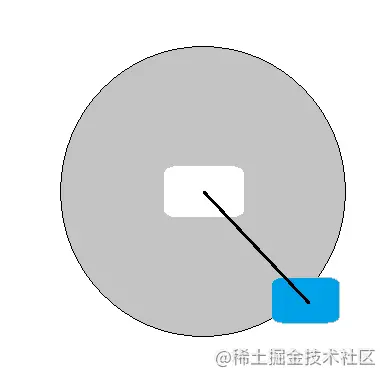
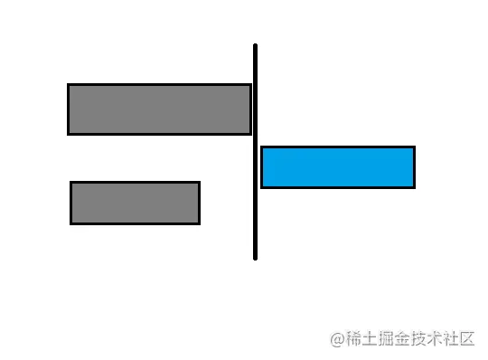
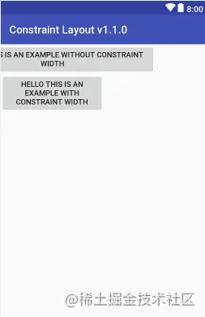

ConstraintLayout-1.1.0新特性
约束布局无疑是最适合构建响应式用户界面的布局-根据屏幕大小自动调整的布局。很高兴ConstraintLayout发布了1.1.0版本，1.1.0的这些新特性让ConstraintLayout能够做出更好的工作，并且不丢失原有的特性。
圆形定位（Circular Positioning）
当一个View需要根据另一个View进行定位时，该角度和距离是从两个视图的中心点测量的。就像以某种角度和距离围绕行星旋转的卫星。

被约束的View可以对齐到相对于其中心View的任何角度和半径
- app:layout_constraintCircle—对齐于哪个View
- app:layout_constraintCircleAngle—对齐的角度
- app:layout_constraintCircleRadius —对齐View的距离（半径）
<Button
android:id="@+id/btCenter"
android:layout_width="wrap_content"
android:layout_height="wrap_content"
android:text="Center Button"/>
<Button
android:id="@+id/btAlign"
android:layout_width="wrap_content"
android:layout_height="wrap_content"
android:text="Aligned Button"
app:layout_constraintCircle="@id/btCenter"
app:layout_constraintCircleAngle="45"
app:layout_constraintCircleRadius="120dp" />
屏障（Barrier）
它能够在运行时根据指定端可用视图的最大宽度创建导线（guideline）。这意味着视图的宽度减小或增加导线会自动移动以与视图的宽度保持一致。屏障与具有最大宽度的视图保持一致，该视图与被引用的视图组中的视图具有最大宽度。

屏障可以设置为开始，结束，顶部，底部 - 这里蓝色框始终保留在屏障的右侧，根据灰色框中的最大宽度计算屏障指引。
<Button
android:id="@+id/btName"
android:layout_width="100dp"
android:layout_height="wrap_content" />
<Button
android:id="@+id/btAge"
android:layout_width="150dp"
android:layout_height="wrap_content"
app:layout_constraintTop_toBottomOf="@+id/btName" />
<android.support.constraint.Barrier
android:id="@+id/barrier"
android:layout_width="wrap_content"
android:layout_height="wrap_content"
app:barrierDirection="end"
app:constraint_referenced_ids="btName,btAge" />
<Button
android:id="@+id/btAddress"
android:layout_width="120dp"
android:layout_height="wrap_content"
app:layout_constraintStart_toEndOf="@+id/barrier" />
这里btAge由具有150dp是大于的宽度btName具有100dp所以垒宽度150dp之后将设置的导线。在运行期间，如果宽度变化超过屏障，则会自动重新计算导线并进一步推移引用的View。
分组（Group）
这是令很多人充满期待的功能。如果多个视图可见性（visibility ）需要设置为显示或隐藏，用Group则可以轻松的完成。想想一个包含各种View的ViewGroup，只需要设置ViewGroup的visibility 为显示或隐藏，它的所有被包含的子View也会同时被显示或隐藏。现在使用Group就可以完成同样的需求，但他并不是一个ViewGroup，它是在平面结构上的一个Group，只需要引用相关View的Id即可。
<Button
android:id="@+id/btCenter"
android:layout_width="wrap_content"
android:layout_height="wrap_content"
android:text="Center Button"
android:textAllCaps="false"
app:layout_constraintBottom_toBottomOf="parent"
app:layout_constraintLeft_toLeftOf="parent"
app:layout_constraintRight_toRightOf="parent"
app:layout_constraintTop_toTopOf="parent" />
<Button
android:id="@+id/btAlign"
android:layout_width="wrap_content"
android:layout_height="wrap_content"
android:text="Aligned Button"
android:textAllCaps="false"
app:layout_constraintCircle="@id/btCenter"
app:layout_constraintCircleAngle="45"
app:layout_constraintCircleRadius="120dp" />
<android.support.constraint.Group
android:id="@+id/group"
android:layout_width="wrap_content"
android:layout_height="wrap_content"
android:visibility="gone"
app:constraint_referenced_ids="btAlign,btCenter" />
占位符（PlaceHolder）
它用于在屏幕上动态设置内容，只需传递它的id即可将任何视图设置为占位符。如果视图与占位符在同一屏幕上存在，则其可见性将自动设置为消失。
< ImageView
android：id =“@ + id / iv_call”
android：layout_width =“wrap_content”
android：layout_height =“wrap_content”
android：src =“@ drawable / ic_launcher_background” />
< android.support.constraint.Placeholder
android：layout_width =“match_parent”
android：layout_height =“100dp”
app：content =“@ + id / iv_call”
app：layout_constraintBottom_toBottomOf =“parent” />
以编程方式设置内容，请使用 placeholder.setContentId（viewId）
尺寸约束（Dimension constraints）
通常需要将视图宽度或高度保持为包裹内容（wrap content）而不是匹配约束（match constraint）或匹配父项（match parent），但不幸的是包裹内容会覆盖应用的约束，并且在宽度或高度更改时与约束重叠
在1.1.0版本中，这个问题可以通过使用
app:layout_constrainedWidth=”true”
或
app:layout_constrainedHeight=”true”
来解决，它所做的是强制约束，并让视图宽度/高度保持为包裹内容

<Button
android:layout_width="wrap_content"
android:layout_height="wrap_content"
android:text="Hello this is an example with constraint width"
app:layout_constrainedWidth="true"
app:layout_constraintLeft_toLeftOf="parent"
app:layout_constraintRight_toRightOf="@+id/guideline_50"/>
百分比约束
约束布局真正缺少的一件事就是能够按百分比定义宽度和高度。在百分比中定义宽度或高度对于创建富有表现力的UI来说非常有用，因为在移动设备或平板电脑上查看时，dp中的宽度或高度并不能很好地工作。
但是现在可以使用
layout_constraintWidth_percent
layout_constraintHeight_percent
以百分比的形式定义宽度和高度。
注意
为了使用百分比来表示宽度和高度，尺寸应该是匹配约束（0dp），而
app：layout_constraintWidth_default =“percent
或
app：layout_constraintHeight_default =”percent“
需要设置为百分比形式
< TextView
android：id =“@ + id / bt”
android：layout_width =“0dp”
android：layout_height =“wrap_content”
android：text =“Hello宽度百分比”
app：layout_constraintWidth_default =“percent”
app：layout_constraintWidth_percent =“0.5 “
app：layout_constraintLeft_toLeftOf =”parent“ />
百分比可以定义在0到1之间，其中1表示100％。这里宽度通过使用0.5被定义为50％。
通过使用约束集来实现动画的约束布局更加酷炫，使用约束优化器和复杂链支持来优化布局。很高兴看到约束布局正在增加构建卓越UI的能力。